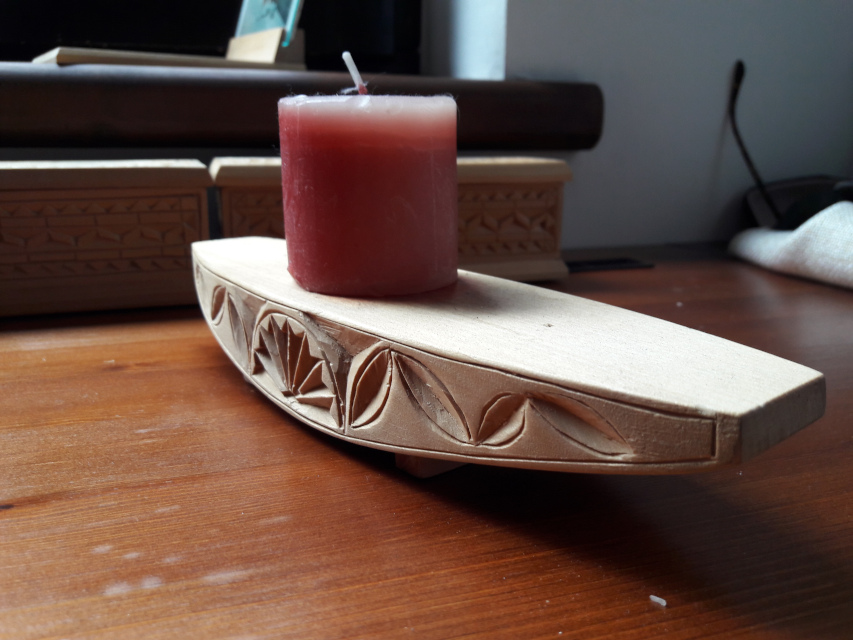

Fafaragás
Ezen az oldalon megtaláljátok a régies,
magyar fafaragással készített termékeket.
Ezeket még régebben,
egy evvel a témával foglalkozó kurzuson csináltam.
Sok féle kézi faragási technikát tanultam, ezeket szeretném itt bemutatni.
- Ékszertartó


- Gyertyatartó

- Nagy képkeret

- Kis képkeret

- Többrészes ékszertartó


Vissza a főoldalra.